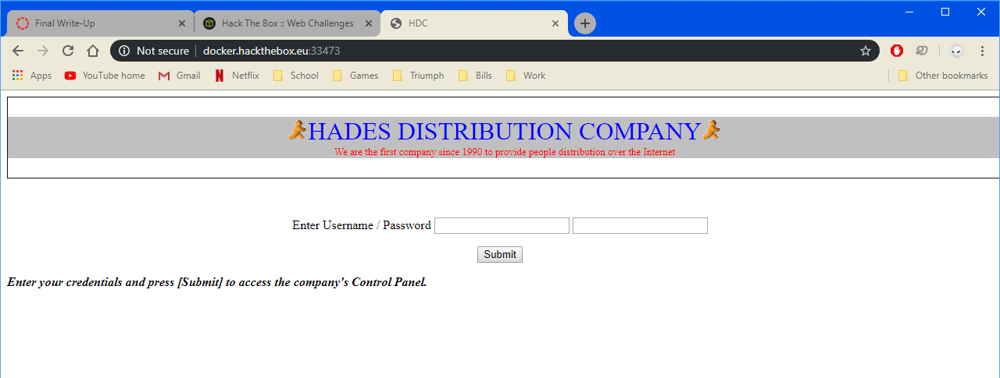
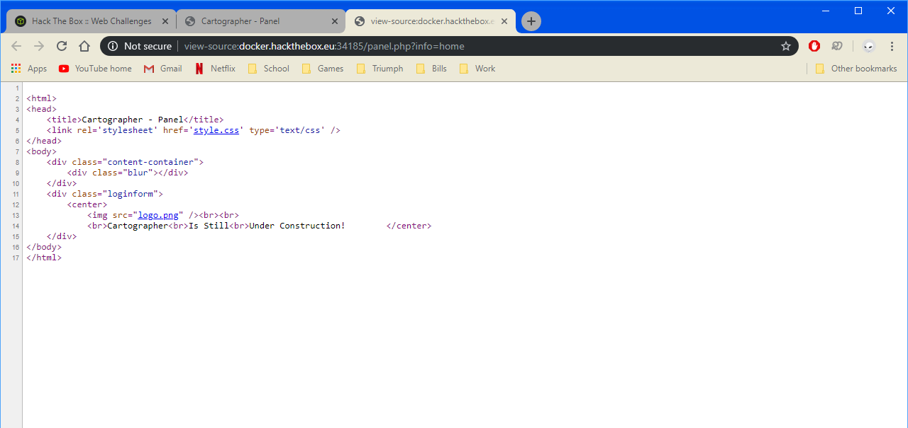
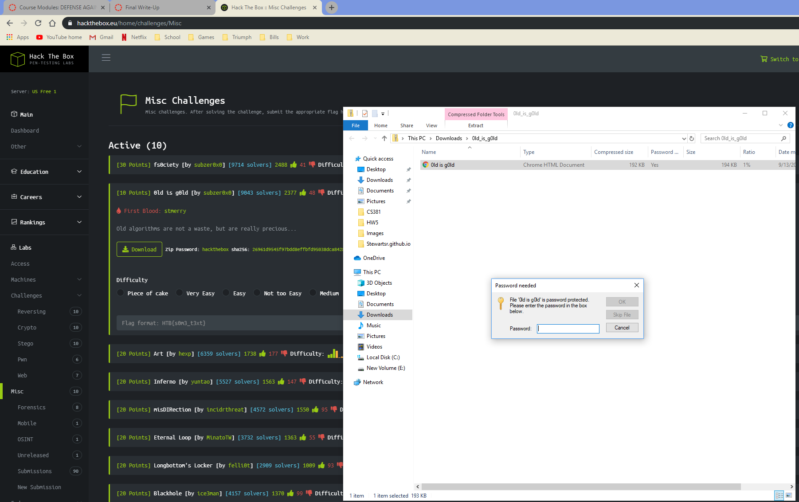
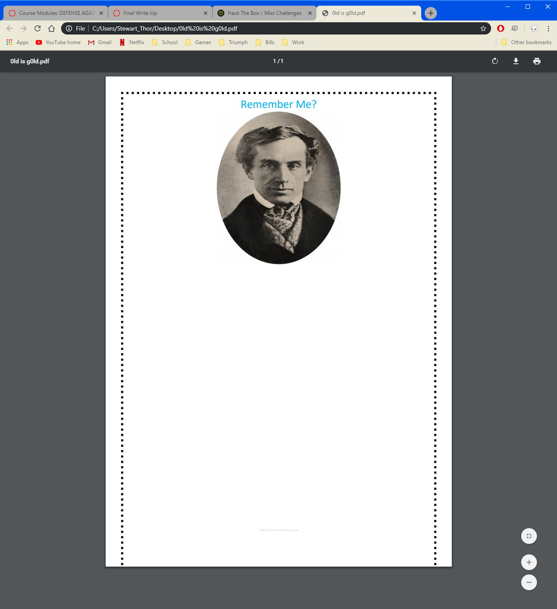

CS373 Hack The Box Final
The first “challenge” of Hack the Box is getting access to the invitation code. With my elite hacker music playing, I got to work on the 0th challenge for Hack The Box, getting the invite code.

Using what we had been discussing this past week in web security, I used inspect element to see if I could find anything I could use.
Lo and behold there is some obfuscated js code for generating/verifying the invite code. Using Chrome’s built in pretty print/formatting didn't help much, so I would need a way to de-ob obfuscate it.
Putting the js code into an online deobfuscator (I could have used one of the tools discussed in the previous week, however I chose to use an online tool to speed up the process, as I didnt have any of the tools already installed) I get the much more usable code:
I quickly saw something I could work with: “function makeInviteCode()” Booya. Chrome can run the js functions so i run it. Running makeInviteCode() in Chrome’s console produces this output:
Its either madness or encrypted, so I can assume encryption, but they were kind enough to give me the kind of encryption, ROT13, which is a simple encryption where you rotate to the 13th next letter.
"Va beqre gb trarengr gur vaivgr pbqr, znxr n CBFG erdhrfg gb /ncv/vaivgr/trarengr" becomes "In order to generate the invite code, make a POST request to /api/invite/generate"
After a bit of digging in the elements I found a post request I could change, the verifyForm.
All I need to do is change /invite into /api/invite/generate
This gives me the code: SFRLVlItTlZUT0wtRFZTU1MtS1ZUTEgtWFpPRFM
Its encoded, but no hint this time. After some trial and error with the online decoder I used earlier, I figured out its in Base64. And Here is my code: HTKVR-NVTOL-DVSSS-KVTLH-XZODS
I'm in.
Challenge Time
I really enjoyed the 0th challenge, so for my 1st and 2nd challenge I looked in the Web section, interested in staying in the area of web security for a little longer.
Challenge 1 - HDC(30 points):
Find someones “shady behavior” and send them an email through the website. Starting the Challenge gives me the host: docker.hackthebox.eu and port:33473, and when I connect to it I get a login for a Distribution Company.

Checking the Source with inspect element shows 2 js files, the myscripts is nearly empty so nothing useful there, however the jquery is 13k+ lines long so I will need something to narrow my search.
In the html source I can see 2 hidden variables, name1 and name2, that should help me narrow down my search.
Searching for name1 and name2 within the jquery-3.2.1.js file shows me the values I need for the login for both:
hiddenField.setAttribute("name","name1"); hiddenField.setAttribute("value","TXlMaXR0bGU");
hiddenField2.setAttribute("name","name2"); hiddenField2.setAttribute("value","cDB3bmll");
I mistakenly assumed that I had 2 login credentials, when in fact, TXlMaXR0bGU is the username and cDB3bmll is the password. Small mistakes aside, now I can log in and look around.
From here I got stuck for a bit. The “Goals” section was fairly empty and not a suspicious area in general. I can send emails but I don’t have the email to send yet so I need to keep looking. The last area to search is the Special Customers’ Mailbox:
?????????? only led me to what looked like another dead end so I decided to see if anything was hidden on the Special Customers' Mailbox page that I might have missed, using “View Page Source” and “View Frame Source”.
Booya x2, in the frame source I can see: “./secret_area_/mails.gif” and odd name for an icon, very suspicious. Following it just shows the icon but removing the “/mails.gif” lets me get to a hidden directory.

And going to the text leads me here:
But what to do now? According to the instructions I need to “find out who that is and send him an email to check, using the web site's functionality” so i began by testing the emails on the website and stumbled upon the flag!
Challenge 1 complete!
Challenge 2 - Cartographer(30 points):
Problem: “Some underground hackers are developing a new command and control server. Can you break in and see what they are up to?”
Starting the challenge I am presented with another log-in screen.
So, naturally its time to inspect the source and wee what I got to work with here.
I don't have much to work with here, and there isn’t any .js I can abuse like last time. What I do see is a POST, so I can try some SQL injection. After trying a number of commands and double-checking my syntax (my SQL being a bit rusty) I was able to get in using 'or'1'='1 as the input to username and password.
This lead me to what looks like a dead end:
Inspecting the source shows no results.

I checked the html source for hidden links, used Chrome’s built in inspect to check for any js scripts that might be running in the background, and got nothing. This stumped me for a while. Looking at the challenge description I tried changing the info=home to info=(various combinations/forms of “command”, “control”, and “server”) to no results. After a bit I realized that this is not a real website (duh), its was a game of capture the flag, and if I was getting no hints of another path or direction then I was likely right on top of it so I tried info=flag
So simple it actually made me mad
I feel like this challenge was a little too game like compared to HDC and the Intro Challenge.
Challenge 3 - 0ld is g0ld (10 points):
This challenge was labeled “misc” and is only worth 10 points, which is what caught my eye as there are no challenges worth so little in the web section so I thought it might be a relaxing way to wrap up the base requirements for the final.
The hint is: “Old algorithms are not a waste, but are really precious... “
The download only contains a pdf in a zipped file. Pulling “0ld is g0ld.pdf” out of its zipped file prompts a password, which is where our provided password comes in I assumed.

That worked, however we are now blocked with a 2nd password requirement.
Probably should have expected it but the same password does not work for the 2nd password requirement, guess it wouldn't be a challenge if it was easier than downloading Chrome.
So, a little stuck and seemingly no way to get the password in a clever manner I started looking online for a pdf cracker. The first legitimate one I could find that was free was an older tool called PDF crack, so I grabbed a dictionary (rockyou.txt):
And began to brute-force the password, once that had finished i get the password! “Jumanji69” and got the pdf open:

I didn't recognise the picture, and was highlighting the whole page for hidden text when I say the Morse code at the bottom in small text!: .-. .---- .--. ... .- -- ..- ...-- .-.. -- ----- .-. ... ...--
A quick online translator and I got the flag!
Mission complete!
The hint was more of a reference than a hint, as it didnt help me solve the challenge, although it might have helped someone who was unfamiliar with Morse Code.
With that completed I have to total of 70 points from the challenges so far.